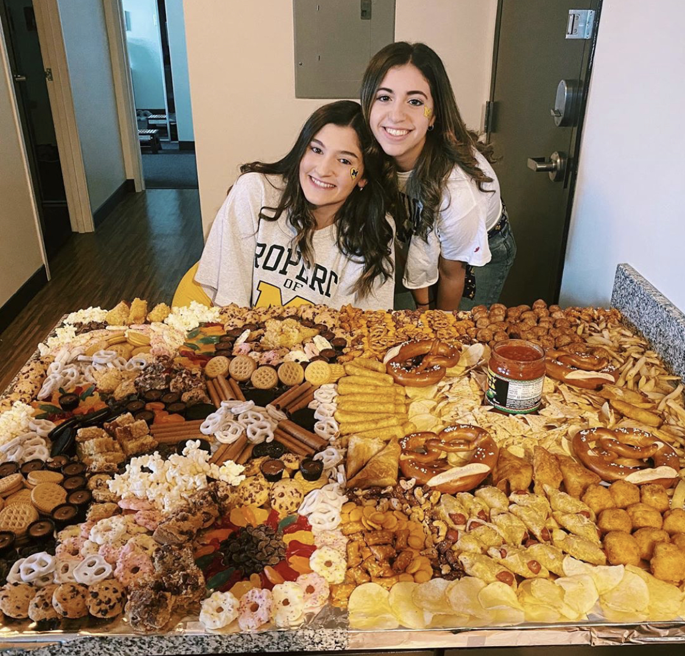

About Us
@aa_cravings always knows what you’re craving in Downtown Ann Arbor, Michigan. We are University of Michigan student run! Open for collaboration and partnerships.
Jessica Rakowski is a junior pursuing a dual degree in the School of Information and Organizational Studies. She is from New York and became a foodie by going into New York City for interesting meals growing up. Jessica is interning as a Content Designer at Facebook this summer. Jessica’s favorite Ann Arbor restaurant is Aventura.
Amanda Gittelman is a junior studying Psychology. She is from New Jersey and discovered her love for food by trying new recipes to cook. Amanda is interning at Morgan Stanley as an HR Analyst this summer. Amanda’s favorite Ann Arbor restaurant is Black Pearl.
